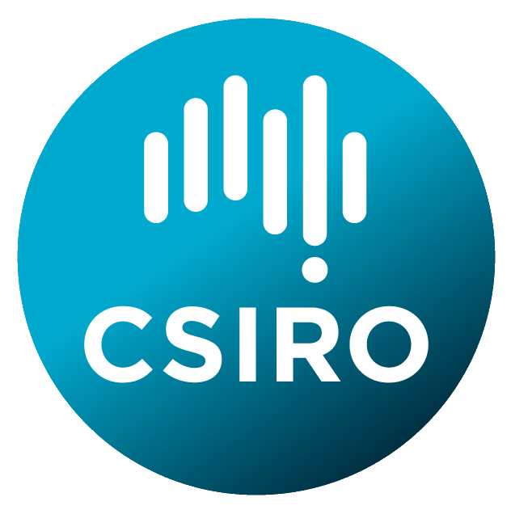

Linking Environmental Data and Samples

↪ Aims and scope
↪ Participants
↪ Programme
↪ Logistics and accommodation
↪ Programme committee
↪ Organising committee
Sponsors
|  |
 |
Additional participant support
 |
|
29 May - 2 June 2017, Canberra, Australia
An international symposium to be hosted by CSIRO.
Aims and scope
Environmental and earth science data is collected by a large number of organizations, in both public and private sectors, with a heavy focus on observations and spatial data. There is an abundance of data standards, and weak governance around controlled vocabularies, so data reuse often involves educated guesses about its structure, and the meaning of embedded abbreviations and codes. Links to physical samples, and to features in the real world from where these were taken, are often ambiguous. This fragmentation imposes significant costs on projects, with as much as 80% of project effort spent on identifying and cleaning existing data. Challenges are technical, social, and institutional.
A growing community of earth and environmental scientists, working on the interface with computational science, are developing detailed practices and standards around identifiers, vocabularies, and software interfaces, which are necessary for wider community application. Currently, these efforts are fragmented, as is the communication of technical solutions and organisational best practices.
Linking Environmental Data and Samples will bring together leading researchers in earth and environmental informatics, to establish the current state of the art in environmental science data publication and its use of modern web principles. The focus is on linking data, with a particular interest in the integration of physical samples with datasets based on these, with a goal of triggering the adoption of uniform practices across Australia and internationally.
Communities within the earth and environmental sciences that have been particularly active in these areas include:
- Marine geoscience and oceanography
- Biodiversity
Some of these have a particular reliance in physical samples, including geological sciences and biodiversity. The symposium will explore opportunities for alignment of identifier and registration systems from these disciplines, as well as more general research data systems like DataCite.
The design of the symposium will build on the experience of the highly successful Earth Science Information Partnership (ESIP) series that has been running for more than two decades in North America.
The symposium will include a field trip on Monday 29th May to a number of national sample collections around Canberra. Following this, an opening reception will be held at the National Museum of Australia on Hospital Point.
Participants
Programme outline
Logistics and accommodation
International guests will find that there are few international flights directly into Canberra. You will likely be routed through Sydney, Brisbane or Melbourne.
The symposium will be held at CSIRO's Black Mountain site. There are many accommodation options in Canberra, though it is usually tighter when parliament is sitting which includes this week. Locations in Acton, New Acton, Civic, Braddon, Turner are all in reasonable walking distance.
Programme Committee
- Anusuriya Devaraju - CSIRO Mineral Resources
- Armin Haller - Australian National University
- Erin Robinson - ESIP Federation
- Francky Fouedjio Kameni - CSIRO Mineral Resources
- Jess Robertson - CSIRO Mineral Resources
- Jens Klump - CSIRO Mineral Resources (chair)
- Jonathan Hodge - CSIRO Oceans and Atmospheres
- Jonathan Yu - CSIRO Land and Water
- Jingbo Wang - NCI, ANU
- Natalia Atkins - IMOS, University of Tasmania
- Nicholas Car - Geoscience Australia
- Peter Taylor - CSIRO Data61
- Simon Cox - CSIRO Land and Water
- Stephanie von Gavel - ALA, CSIRO
- Siddeswara Guru - TERN, University of Queensland
Organising Committee
- Simon Cox - CSIRO Land and Water
- Jens Klump - CSIRO Mineral Resources
- Lesley Wyborn - NCI, ANU
- Kerstin Lehnert - Columbia University
- Erin Robinson - ESIP Federation
- May Ling Goode - CSIRO Land and Water
Contributors
Simon Cox (@dr-shorthair), Jens Klump (@jklump), Jonathan Yu (@jyucsiro).